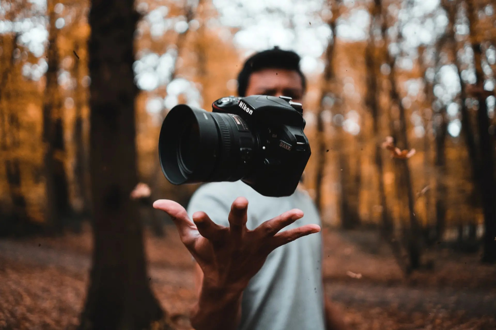

Photography has always been more than just a hobby for me—it is a way to connect with people, places, and moments in a way that words sometimes can’t. From the early days of capturing candid moments with family to exploring the quiet beauty of wildlife and the rhythm of street life, I’ve found that photography helps me notice the world more deeply. There is something meaningful about freezing a fleeting moment, whether it is a laugh shared at a reunion or a hawk mid-flight. Every image holds a story, and I love being the one to help tell it.
Professionally, I’ve had the opportunity to take that passion and turn it into something productive and creative through my work in media. While working with KNS Tech & Media, I created and managed social media content for several local businesses, handling everything from shooting and editing to publishing and tracking performance. That experience sharpened both my technical and storytelling skills. It taught me how powerful a single photo can be when shared with the right intention and audience. Whether I’m shooting for a client or simply walking through a city with my camera, I carry that same sense of purpose with me.
Styles of Photography
- Portrait
- Headshots
- Headshot photography focuses on capturing a person's face with clarity and character, often used for professional profiles, resumes, or personal branding. The goal is to present the subject in a flattering yet authentic way, highlighting expressions and features. Headshots require careful attention to lighting, background, and pose to ensure the person looks both natural and confident. Whether taken indoors with studio lighting or outside with soft natural light, a good headshot can make a lasting first impression.
- Lifestyle
- Lifestyle portraits aim to tell a story by capturing people in natural, real-life environments and situations. These photos often feature relaxed poses and candid expressions to reflect personality and emotion. Rather than formal studio setups, lifestyle portraits might be taken at home, in a park, or during a meaningful activity. They give viewers a glimpse into the subject's everyday life, and are commonly used for family shoots, personal branding, and content creation. The key is to make the subject feel comfortable so the result looks genuine and engaging.
- Landscape
- Nature
- Nature landscape photography captures the beauty and vastness of the natural world. From mountain ranges and forests to oceans and deserts, this style aims to showcase the colors, textures, and patterns found outdoors. Timing and lighting are critical, especially during golden hour or in changing weather conditions. A strong nature landscape photo can inspire awe, calm, or a sense of adventure. It often requires patience, planning, and an eye for composition to frame the scene in a way that communicates its full impact.
- Urban
- Urban landscape photography focuses on the visual elements of cities and towns, highlighting architecture, street scenes, and the rhythm of daily life. This style blends structure and spontaneity, capturing both planned design and unexpected moments. Reflections in windows, movement of crowds, and contrasts between old and new buildings often make urban landscapes compelling. Great urban photography uses lines, symmetry, and light to create images that feel alive and full of story.
- Astro
- Astrophotography is a form of landscape photography that explores the night sky, capturing stars, planets, the Milky Way, and other celestial features. It requires precise settings and long exposures to bring out light from distant sources. Locations away from city lights are ideal for these images, and they often involve planning around moon phases and weather. Astrophotography combines technical skill with artistic vision, turning a dark sky into a canvas of color and movement that reveals the universe in stunning detail. Be sure to check out our Astro Photography interactive to get the best exposure for your shots!
- Sports
- Action shots
- Action sports photography is about freezing fast-paced movement in a single dramatic frame. Whether it's a soccer kick mid-air or a basketball player driving to the hoop, the goal is to capture the intensity and emotion of the moment. This style often relies on fast shutter speeds, long lenses, and precise timing. A well-timed action shot can reveal both strength and grace, and it brings the viewer directly into the excitement of the game.
- Sideline candids
- Sideline candid photography captures athletes in quiet moments before, during, or after the action. These shots might include emotional reactions, team huddles, or a player deep in thought. They offer a more personal look into the experience of sports, beyond just the highlight plays. Candids require a sense of timing and awareness, as the best moments are often brief and unposed. These photos can add powerful storytelling and emotional depth to any sports collection.
Key Techniques
- Rule of Thirds
- The rule of thirds is a foundational photography principle that helps create balanced and visually engaging images. It involves dividing an image into nine equal parts by overlaying two horizontal and two vertical lines, forming a grid. Key elements of the photo, such as the subject’s eyes, the horizon, or a point of interest, are placed along these lines or where they intersect. Positioning the subject off-center this way tends to feel more natural and dynamic to the viewer than placing it in the middle. By following the rule of thirds, photographers can guide the viewer's attention and create a stronger sense of movement and space within the frame.
- Depth of Field
- Depth of field refers to how much of an image is in sharp focus from front to back. A shallow depth of field means only a small portion of the image, typically the subject, is in focus while the background is blurred. This effect is often used in portraits to isolate the subject and draw attention to it. A deeper depth of field keeps more of the scene in focus, which is ideal for landscapes or architecture where you want clarity throughout the entire image. Photographers can control depth of field by adjusting the aperture, the distance to the subject, and the focal length of the lens.
- Long Exposure
- Long exposure photography involves using a slow shutter speed to allow more light to hit the camera sensor over a longer period of time. This technique is great for capturing motion in a still frame, such as smoothing out water in a river, streaking lights from cars, or showing the movement of clouds. It often requires a tripod to keep the camera steady and avoid unwanted blur. Long exposure is especially popular in night photography and creative effects, where it can reveal things not easily seen by the naked eye.
- Lighting Control
- Lighting control is one of the most important skills in photography because it affects the mood, clarity, and impact of an image. Good lighting can define textures, set a tone, and guide the viewer's attention to the subject. Photographers use both natural and artificial sources to shape light, often with the help of reflectors, diffusers, and flash units. Understanding how light behaves, where it falls, and how to adjust it gives photographers more creative control over their final results. Whether soft and flattering or sharp and dramatic, lighting plays a key role in telling the story behind a photo.
Essential Equipment
The gear you use plays a big role in the quality and style of your photography. While skill always comes first, the right equipment helps you achieve your creative goals more easily and consistently. Whether you are shooting portraits, sports, landscapes, or astrophotography, each scenario benefits from specific tools and setups. Knowing your gear and investing in what fits your needs can make a noticeable difference in your results. If you’re not sure where to start, check out our recommended equipment list to learn what might work best for you.
Explore EquipmentMarketing Your Photography
- Build a strong portfolio
- A strong portfolio is essential for showcasing your skills, style, and range as a photographer. It acts as your visual résumé, helping potential clients or collaborators understand what you offer. Each image should reflect your best work and highlight consistency, creativity, and attention to detail. A good portfolio is also organized and easy to navigate, making it more likely to leave a lasting impression. Updating your portfolio regularly ensures it reflects your growth and keeps it relevant to your current goals.
- Utilize social media platforms
- Social media is a powerful tool for photographers to share work, build an audience, and connect with opportunities. Platforms like Instagram, Facebook, and Pinterest allow you to showcase your style while engaging with communities that appreciate visual storytelling. By posting regularly, using strategic hashtags, and interacting with followers, you can grow your visibility and credibility. Social media also provides a space to experiment with new ideas and get real-time feedback.
- Engage in local collaborations
- Working with other creatives in your local area can open up exciting new opportunities and expand your skillset. Whether teaming up with models, businesses, artists, or event planners, collaborations often lead to fresh content and wider exposure. These partnerships also help build relationships in the industry and make your work more community-centered. By supporting others and contributing your strengths, you create a network that supports your own growth in return.
- Create a personal brand
- Your personal brand is the voice, tone, and identity that people associate with your photography. It reflects your values, your visual style, and how you communicate with your audience. Building a consistent personal brand helps you stand out in a crowded market and builds trust with clients. This includes everything from the colors you use in your portfolio to how you write your bio or respond to messages. A strong brand makes you more memorable and can turn followers into long-term clients.
My Résumé
Check out my professional background, experience, and skills.
View RésuméInteractive Astro Exposure Calculator

How to Use this information!
Astrophotography Settings Web-App
This interactive tool helps photographers determine optimal camera settings for capturing the night sky based on their equipment, environment, and subject of interest. Users can input their lens focal length, camera sensor type, aperture, sky conditions, and whether they’re shooting the Milky Way, star trails, planets, or the moon. The tool calculates an estimated shutter speed using standard astrophotography formulas (like the 500 rule), provides an ISO range recommendation tailored to ambient light and aperture, and gives personalized tips to improve results. It also generates a radar chart that visualizes the exposure balance across five key factors: shutter speed, aperture size, ISO sensitivity, light pollution, and subject complexity. Whether you're planning your first shoot or fine-tuning settings for advanced results, this app makes exposure planning intuitive, efficient, and visually informative.
Launch Tool